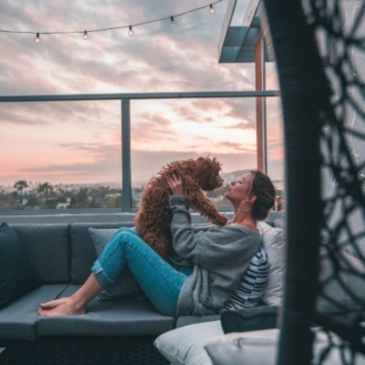

"We love animals! We always have and we always will." This is what Brad and Judy Foster always say when asked why they opened a pet adoption service. Siblings who grew up on a small farm in Georgia, they developed a love for animals at an early age.
When they saw how many animals there were in the world who did not have home, they made it their goal to one day open a pet adoption service that would help these animals find the homes that they need. Lucky Whiskers is the result of that dream.